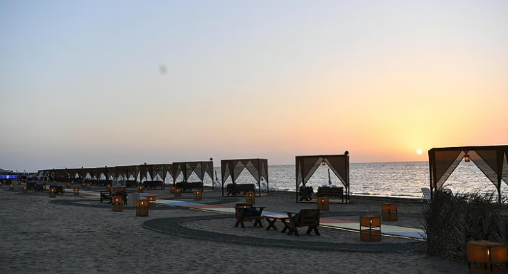

الاسواق الشعبية
يتميز هذا السوق بكونه مركزاً حيوياً يجمع بين عبق الماضي واحتياجات الحاضر، حيث يمكنك العثور على أشهر منتجات جازان من النباتات العطرية كالفل والكادي والبعيثران، إلى جانب المصنوعات اليدوية مثل "الموافي" الفخارية والمجامر المزخرفة

القلعة الدوسرية
تُعد من أبرز المعالم التاريخية في المنطقة وأكثرها جذبًا للزوار. بُنيت القلعة في أواخر العهد العثماني لتكون موقعًا عسكريًا واستراتيجيًا مهمًا، حيث استُخدمت لمراقبة المدينة وحماية السواحل وتنظيم شؤون الحكم آنذاك.

مطعم شعبي
منصف هو أيقونةً عصرية للمطبخ الجيزاني الأصيل، حيث يمزج بين عبق التراث وروح الحداثة ليقدم تجربة طعام فريدة تعكس هوية منطقة جازان. ويتميز بتصميمه المستوحى من العمارة الجيزانية
واجهات مثالية لمحبي البحر والمغامرات

غابة القندل
اكتشفوا جمال الطبيعة البكر في غابة القندل بجزيرة فرسان، إحدى أروع المحميات الطبيعية في المملكة. تتكون الغابة من أشجار القندل التي تنمو وسط مياه البحر المالحة، مشكلةً منظراً طبيعياً فريداً يشبه المتاهة المائية. يتميز المكان بهدوئه الساحر وتنوعه البيولوجي، حيث يمكنكم رصد مختلف أنواع الطيور والأسماك.

الواجهة البحرية
تُعد من أبرز المعالم التاريخية في المنطقة وأكثرها جذبًا للزوار. بُنيت القلعة في أواخر العهد العثماني لتكون موقعًا عسكريًا واستراتيجيًا مهمًا، حيث استُخدمت لمراقبة المدينة وحماية السواحل وتنظيم شؤون الحكم آنذاك.

شاطىء الهئية الملكية
وجهة مثالية لعشاق الشواطئ النظيفة والخدمات المتكاملة. يتميز الشاطئ برماله البيضاء النظيفة ومياهه الزرقاء الصافية، ويوفر بيئة منظمة ومجهزة بمرافق ممتازة تشمل مناطق للجلوس، وملاعب للأطفال، وممرات للمشي، حيث يمكنكم الاستمتاع بالسباحة الامنة.
إلى القمم حيث العظمة والطبيعة

جبال فيفاء
نجمة الجنوب وجارة القمر , تعتبر جبال فيفاء أعجوبة معمارية وطبيعية، حيث تتشكل من مجموعة جبال متلاصقة تبدو من بعيد كهرام أخضر يعانق السماء، وتشتهر بمدرجاتها الزراعية التي دشنها الأجداد ببراعة هندسية مذهلة لتطويع التضاريس القاسية

اكواخ لي لونا
يستقر كوخ "لي لونا" كقطعة فنية خشبية في أعالي الجبل الأسود بمحافظة الريث، وهو يمثل الجيل الجديد من السياحة الريفية الفاخرة التي تمزج بين بساطة الكوخ وعصرية الخدمات. يمتاز الموقع بإطلالة بانورامية ساحرة تجعلك تستيقظ على مشهد الضباب وهو يتدفق بين الوديان

جبال القهر
قع جبال القهر (زهوان) في محافظة الريث ، حيث تمتاز بتشكيلات صخرية أسطوانية نادرة تبدو وكأنها منحوتة بيد فنان، مما يعطيها طابعاً مهيباً وغامضاً. تمتاز هذه الجبال ببرودتها العالية واحتضانها للعديد من النقوش الأثرية والكهوف التي كانت مسكناً للإنسان القديم